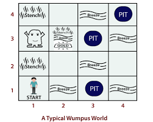
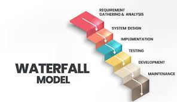

RANDOM INFORMATION
Z-index
Z-index dalam CSS digunakan untuk mengatur urutan tumpukan (stacking order) dari elemen-elemen yang posisinya ditentukan secara relative, absolute, atau fixed. z-index menentukan elemen mana yang akan tampil di depan elemen lain ketika ada dua atau lebih elemen yang saling tumpang tindih di layar. Sumbu Z: Dalam konteks desain web, elemen-elemen ditampilkan dalam dua dimensi (x untuk horizontal dan y untuk vertikal). Namun, ketika elemen-elemen saling tumpang tindih, kita memerlukan sumbu ketiga, yaitu z, yang mengatur kedalaman atau urutan tumpukan elemen. z-index: Adalah nilai yang menentukan urutan elemen-elemen tersebut pada sumbu z. Elemen dengan nilai z-index yang lebih besar akan ditampilkan di depan elemen dengan nilai z-index yang lebih kecil.

Wumpus World
Wumpus World adalah salah satu masalah klasik dalam kecerdasan buatan (AI) yang digunakan untuk mengilustrasikan cara agen cerdas bekerja di lingkungan yang tidak pasti. Ini merupakan permainan berbasis grid di mana agen harus bergerak melalui ruangan-ruangan sambil menghindari bahaya, mencari emas, dan memahami lingkungan hanya dengan sedikit informasi sensorik. Komponen Utama Wumpus World meliputi Grid, Lubang (pit), Monster (Wumpus), Agen Emas.

Waterfall Method
Waterfall Method adalah salah satu model pengembangan perangkat lunak yang paling tradisional dan banyak digunakan dalam rekayasa perangkat lunak. Metode ini mengikuti pendekatan yang linier dan berurutan, di mana setiap fase pengembangan harus diselesaikan sepenuhnya sebelum pindah ke fase berikutnya. Karena proses ini berjalan satu arah, seperti aliran air terjun (dari atas ke bawah), model ini dikenal sebagai "waterfall".
